2026年Q2 職業安全衛生委員會報告
- 擬訂之職業安全衛生政策提出建議。
- 協調、建議職業安全衛生管理計畫。
- 審議安全、衛生教育訓練實施計畫。
- 審議作業環境監測計畫、監測結果及採行措施。
- 審議健康管理、職業病預防及健康促進事項。
- 審議各項安全衛生提案。
- 審議事業單位自動檢查及安全衛生稽核事項。
- 審議機械、設備或原料、材料危害之預防措施。
- 審議職業災害調查報告。
- 考核現場安全衛生管理績效。
- 審議承攬業務安全衛生管理事項。
- 其他有關職業安全衛生管理事項。
| # | 訓練項目 | 對象 | 計畫時程 | 狀態 | 執行日期 |
|---|---|---|---|---|---|
| 1 | 總部辦公室職安衛生教育訓練（含消防實作） | 總部辦公室全體同仁 | 第二季 | 已完成 | 5月14日 |
| 2 | 彰化全興廠職安衛生教育訓練（含消防實作） | 彰化全興廠全體同仁 | 第二季 | 已完成 | 5月21日 |
| 3 | 司機員教育訓練 | 持有駕照同仁 | 第二／三季 | 待執行 | — |
2026/05/14 總部訓練教材涵蓋職安法規義務、辦公室 6S、電氣安全、人因工程、申訴通報、地震避難、交通安全與熱危害。

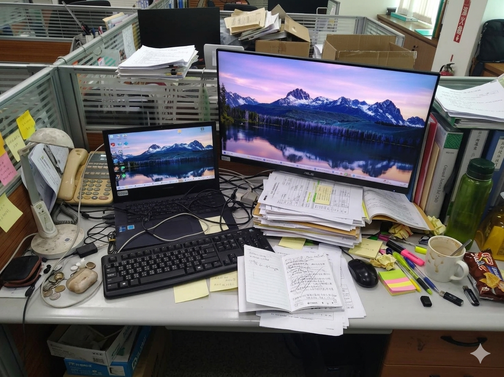


本次訓練含室內職安課程講解、CPR 示範教學，以及室外滅火器實作演練，全體同仁均參與完成。
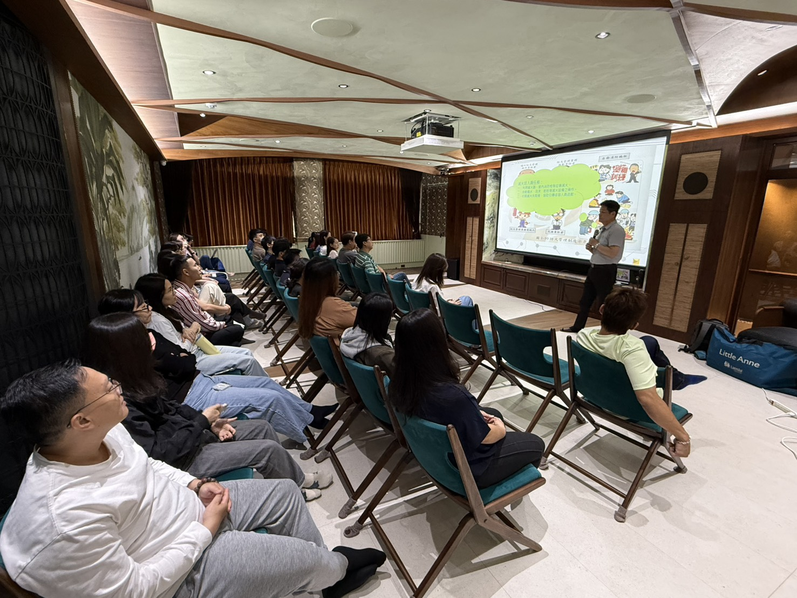
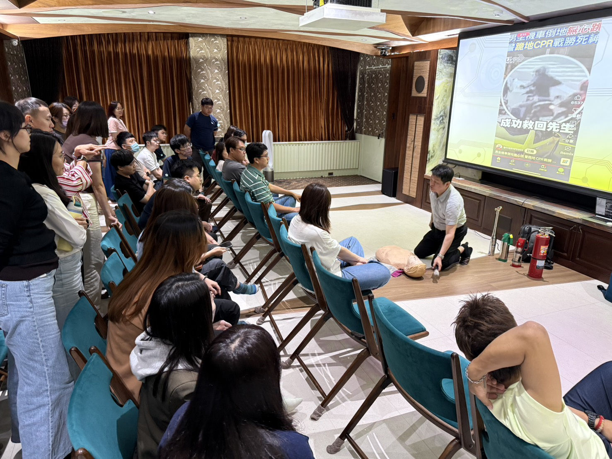
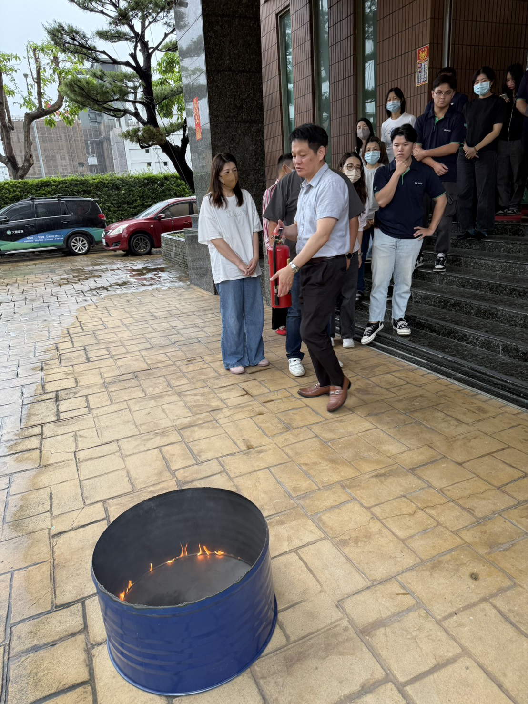
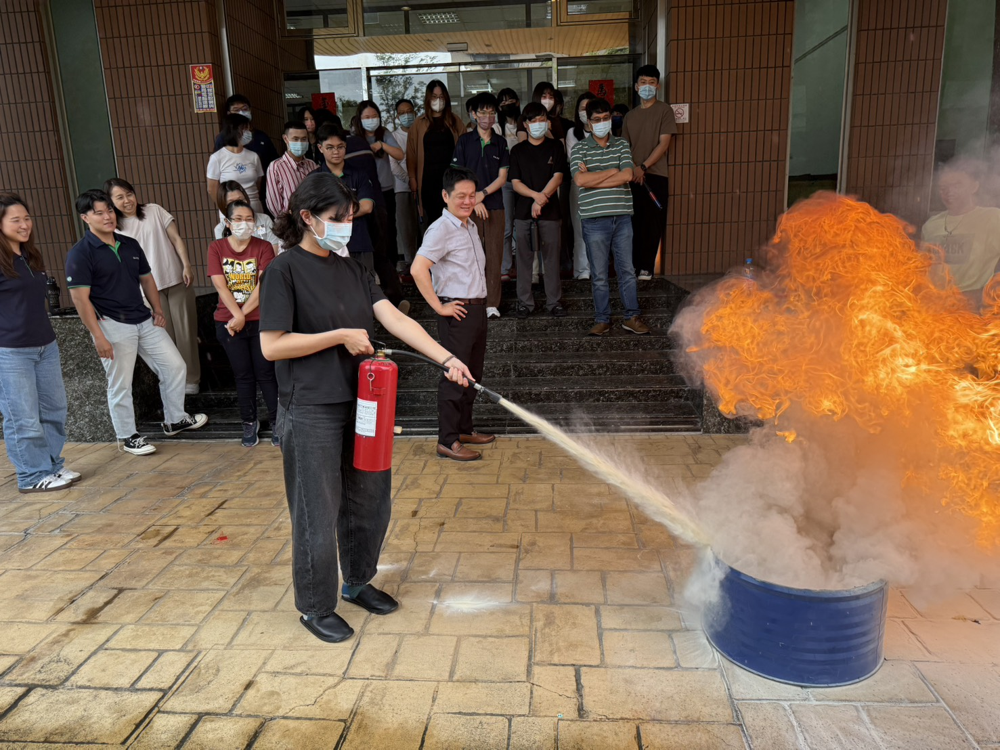
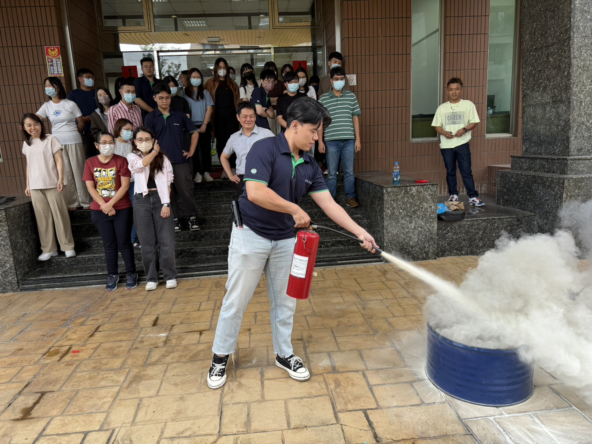
本次訓練含室內職安課程（職安法規、急救知識）及室外消防水帶操作實作演練，全廠員工均參與完成。
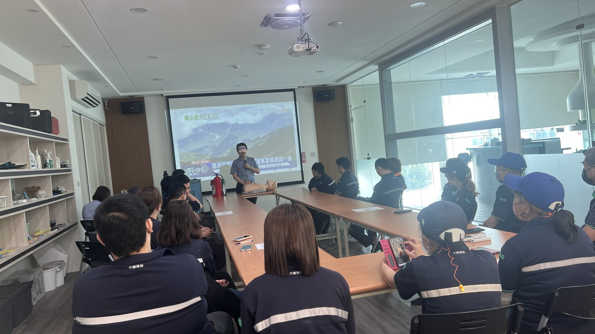
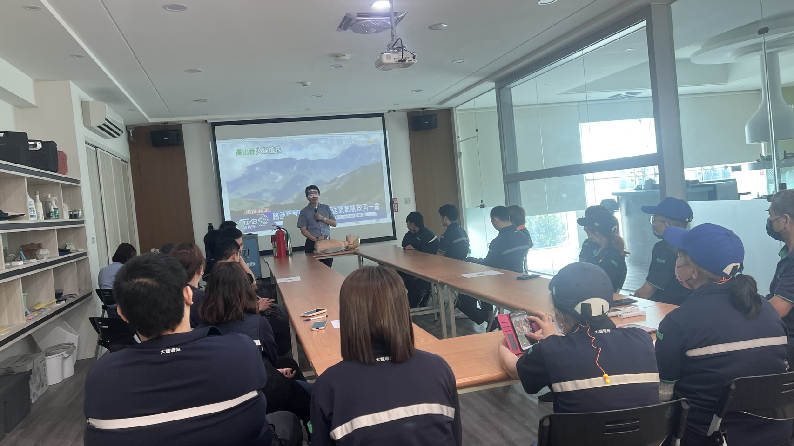
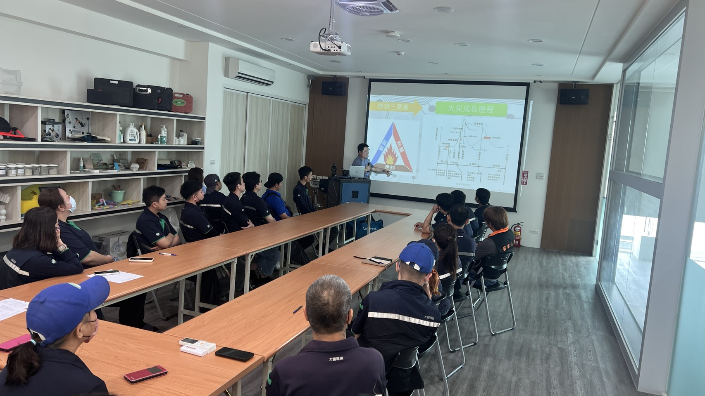
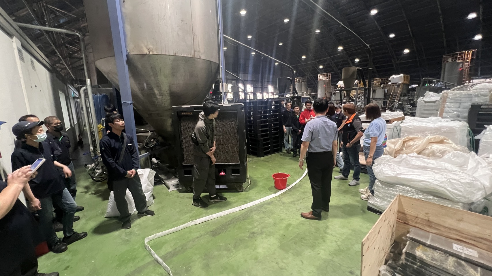
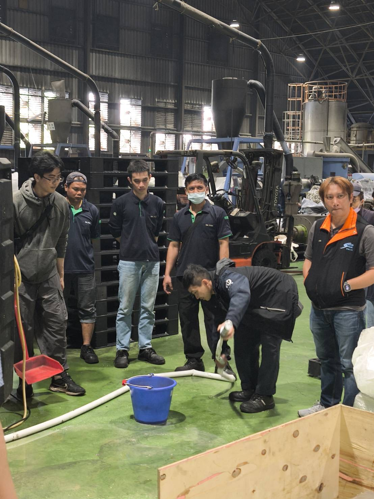
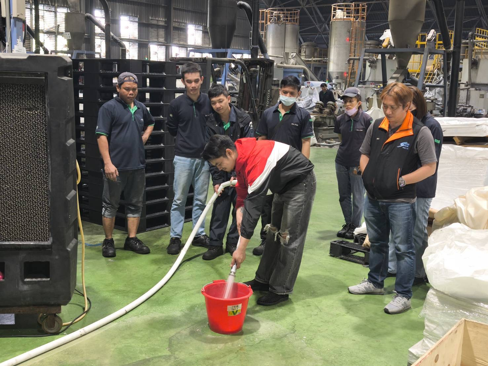
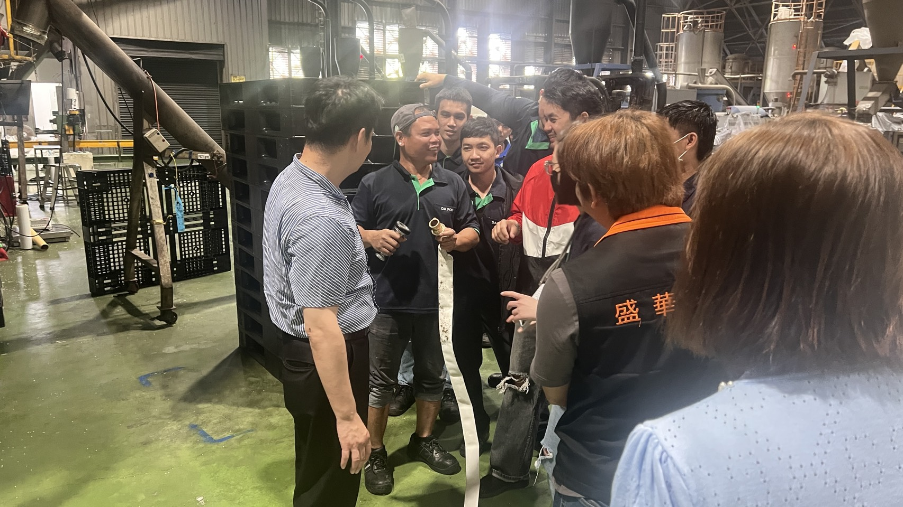
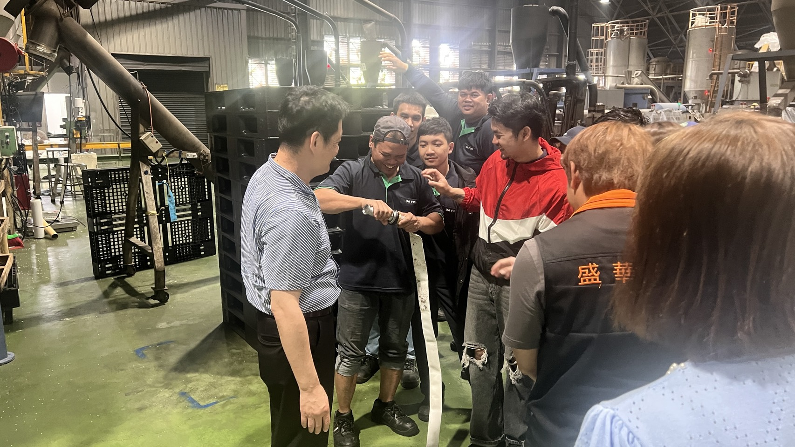
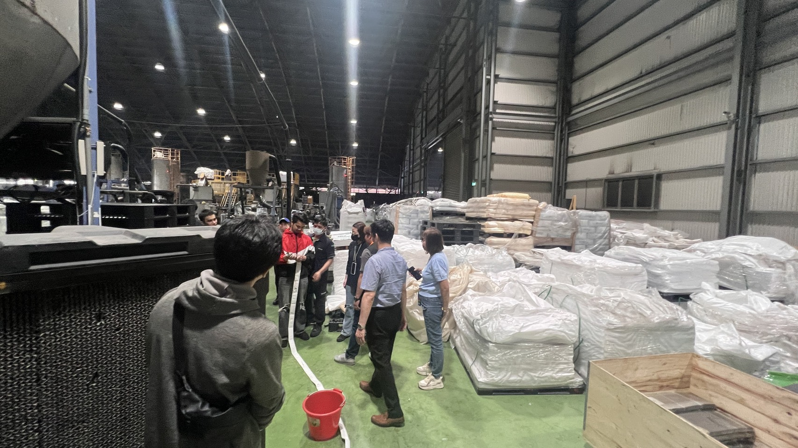
台中總公司（案號 115059895A，監測日期 2026/05/08）及彰化全興廠（案號 115059872A，監測日期 2026/05/06）已完成上半年法定作業環境監測，所有監測項目結果均未超過容許標準。
| 廠區 | 案號 | 監測日期 | 監測項目 | 點次 | 結果 |
|---|---|---|---|---|---|
| 台中總公司 | 115059895A | 2026/05/08 | 二氧化碳（CO₂） | 9 | 全合格 |
| 照度 | 9 | 全合格 | |||
| 彰化全興廠 | 115059872A | 2026/05/06 | 噪音（個人劑量） | 4 | 全合格 |
| 照度 | 10 | 全合格 |
▶ 二氧化碳（CO₂）— 容許標準 5,000 ppm
| 樣本編號 | 量測位置 | 測定值（ppm） | 容許標準 | 結果 |
|---|---|---|---|---|
| DO-01 | 1F 數位智能部 | 724 | 5,000 | 合格 |
| DO-02 | 1F 人資部 | 651 | 5,000 | 合格 |
| DO-03 | 1F 視訊會議室 | 825 | 5,000 | 合格 |
| DO-04 | 1F 面談室 | 608 | 5,000 | 合格 |
| DO-05 | 2F 國際事業部 | 995 | 5,000 | 合格 |
| DO-06 | 2F 電子商務部（家電回收） | 986 | 5,000 | 合格 |
| DO-07 | 2F 電子商務部（客服行銷） | 990 | 5,000 | 合格 |
| DO-08 | 3F 業務開發部 | 855 | 5,000 | 合格 |
| DO-09 | 3F 財務部 | 843 | 5,000 | 合格 |
▶ 照度 — 依作業性質需達基準值（Lux）
| 樣本編號 | 量測位置 | 測定值（Lux） | 基準值（Lux） | 結果 |
|---|---|---|---|---|
| LT-01 | 1F 數位智能部 | 480 | 300 | 合格 |
| LT-02 | 1F 人資部 | 591 | 300 | 合格 |
| LT-03 | 1F 視訊會議室 | 443 | 200 | 合格 |
| LT-04 | 1F 面談室 | 390 | 200 | 合格 |
| LT-05 | 2F 國際事業部 | 565 | 300 | 合格 |
| LT-06 | 2F 電子商務部（家電回收） | 653 | 300 | 合格 |
| LT-07 | 2F 電子商務部（客服行銷） | 673 | 300 | 合格 |
| LT-08 | 3F 業務開發部 | 630 | 300 | 合格 |
| LT-09 | 3F 財務部 | 468 | 300 | 合格 |
▶ 噪音（個人劑量計）— 法定容許標準 90 dBA / 100%
| 樣本編號 | 作業類別 | 受測人員 | 劑量（%） | 等效音量（dBA） | 峰值（dB） | 結果 |
|---|---|---|---|---|---|---|
| CD-01 | 處理一課／粉碎作業 | 吳鋐庭 | 50.92% | 87.0 | <115 | 合格 |
| CD-02 | 處理二課／粉碎作業 | 薩拉育 | 78.20% | 89.9 | <115 | 合格 |
| CD-03 | 2F 造粒區（1號機）／押出成型 | 萬多 | 66.26% | 88.9 | <115 | 合格 |
| CD-04 | 2F 造粒區（2號機）／押出成型 | 吉拉沙 | 58.49% | 88.1 | <115 | 合格 |
▶ 照度 — 依作業性質需達基準值（Lux）
| 樣本編號 | 量測位置 | 測定值（Lux） | 基準值（Lux） | 結果 |
|---|---|---|---|---|
| LT-01 | 1F 自動打包機 | 535 | 200 | 合格 |
| LT-02 | 1F 色選 | 685 | 200 | 合格 |
| LT-03 | 1F 投料口 | 586 | 200 | 合格 |
| LT-04 | 2F 3、4號機中間 | 355 | 200 | 合格 |
| LT-05 | 2F 電梯口 | 372 | 50 | 合格 |
| LT-06 | 入庫 | 476 | 100 | 合格 |
| LT-07 | 成品儲存區 | 510 | 50 | 合格 |
| LT-08 | 走道 | 501 | 50 | 合格 |
| LT-09 | 原料儲存區 | 384 | 50 | 合格 |
| LT-10 | 處理一課／粉碎作業區 | 326 | 100 | 合格 |
- 總部：5/15
- 全興廠：5/14
- 總部：6/23
- 全興廠：【待確認】
- 年度健檢分級追蹤人員
- 職業病預防諮詢
- 職護臨場服務：12次／年
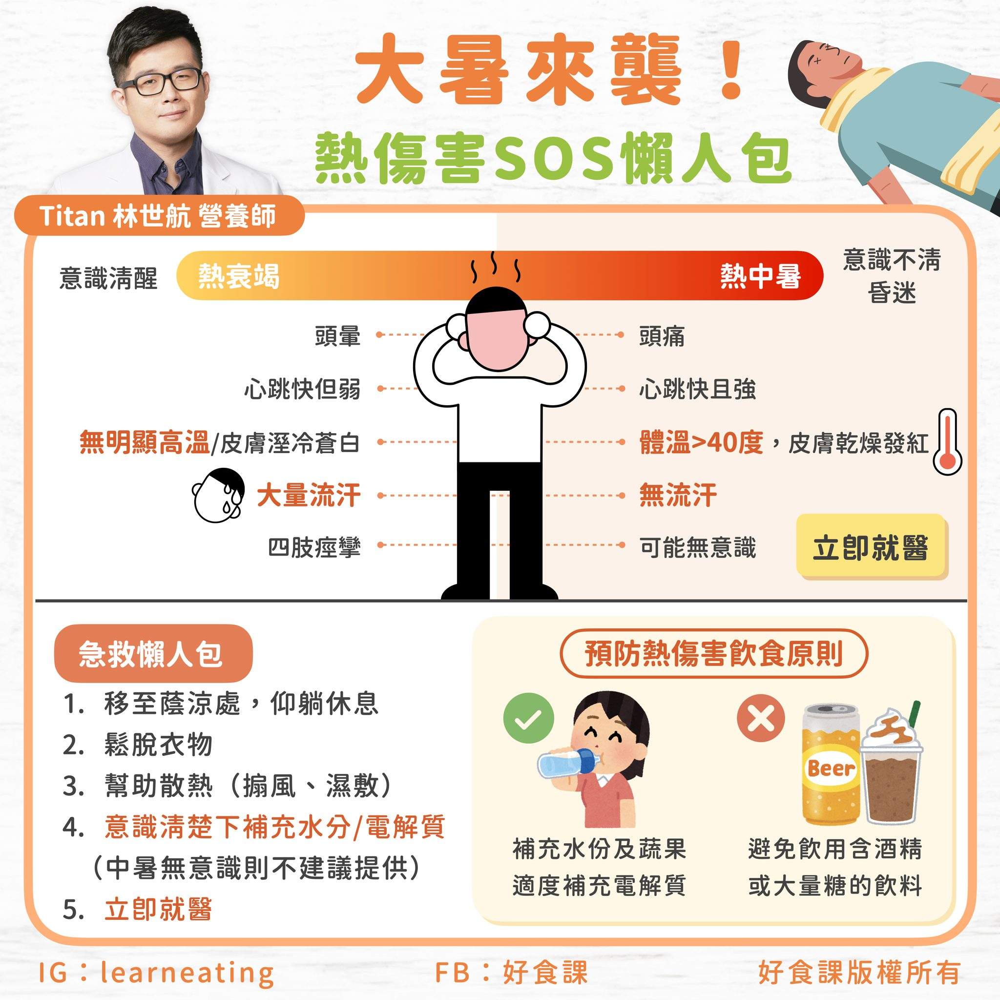
| 熱傷害類型 | 主要症狀 | 處置方式 |
|---|---|---|
| 熱痙攣 | 肌肉疼痛性痙攣 | 移至陰涼處休息、補充水分及電解質 |
| 熱衰竭 | 大量出汗、頭暈、噁心、皮膚濕冷 | 移至陰涼處休息、補充水分及電解質、抬高雙腳 |
| 熱中暑 | 體溫超過40°C、意識不清、皮膚乾燙 | 立即送醫（頭稍微墊高），同時進行降溫 |
- 白色延長線改接工業延長線，消除直插牆壁插座之過載（已告知，確認執行）
- 排插架高固定至桌面或牆面，禁止直接置放地板（防潮濕接觸）
- 地板電線以線槽或線夾固定於踢腳板，不得橫跨通行區域
- 作業前 15 分鐘開啟機械換氣，全程維持通風
- 強制配戴 N95/KN95 口罩、棉紗手套、安全包趾鞋（PPE 清單已列入評估報告）
- 規定每 50 分鐘休息 10 分鐘，避免長時間悶熱環境作業
風險危害分析：6S 管理（整理、整頓、清掃、清潔、素養、安全）是辦公室職安的基礎，訓練完成後需有後續稽查才能落地。
- 訓練後 2 週內進行辦公室自主檢查，對照 6S 項目逐樓層稽查並拍照記錄
- 建立「每日離座前確認清單」：清空通道、收納電線、關閉不用插座
- 每季 6S 競賽或評比，由各部門主管協助推動
風險危害分析：人因工程傷害累積緩慢，不易被當場發現，但一旦發生往往損失工日長、難以快速復原，屬易被忽略的高成本風險。
- 針對地下室搬運作業納入工具箱會議（5 分鐘安全宣導），強調正確姿勢（蹲腿勿彎腰）
- 超過 15 公斤物品規定雙人搬運或使用推車，禁止單人強行搬運
- 辦公室長時間坐姿作業：推廣每 1 小時起身伸展，訓練教材已含腕道症候群預防影片
- 未來加入肌肉骨骼相關問卷，追蹤高風險同仁
風險危害分析：依安全設備櫃增設計劃報告，建議將急救、PPE、應變用品、點檢表與緊急聯絡資料集中管理。
- 優先於出入口附近設置設備櫃
- 納入急救箱、口罩、止滑手套、手電筒、防火毯、緊急聯絡表及月檢表
風險危害分析：依 2026/05/13 評估，設備在未完成電控防護、線束固定、防夾設計、周邊6S、SOP與教育訓練前，不宜開放一般人員使用。
- 電池區、電控區與垃圾收集區實體隔離，避免液體或碎屑進入電控與電池
- 控制板、端子及帶電部位加裝防護罩，線束固定並避開活動機構與銳邊
- 投放口與維修門建立防夾及斷電管制，卡料排除由受訓人員執行
- 建立操作、清潔、維修、卡料排除、異常停機及火災通報SOP
- 設備周邊1公尺保持整潔，移除紙箱、工具、包材並納入6S巡檢
| 編號 | 危害情境 | 可能後果 | 風險值 | 控制措施 |
|---|---|---|---|---|
| A1 | 舊衣等可燃物堆置 | 火災延燒 | 6 | 維持消防設備前 0.5m 淨空，移除近距離可燃物 |
| A2 | 單一插座同接三條線路 | 過載、短路、引燃 | 6 | 電工評估插座面板，更換老化插座並避免章魚腳 |
| A3 | 延長線排插置地且鄰近舊衣 | 積塵、受潮、短路 | 6 | 排插架高並改用工業延長線，地面線路固定 |
| B1/B2 | 地下室粉塵與黴菌 | 呼吸道刺激、過敏 | 6 | 作業前換氣 15 分鐘，佩戴 N95/KN95、手套與安全鞋 |
| C1/C2 | 電線橫跨地面及搬運姿勢 | 絆倒、腰背傷害 | 6 | 線槽/線夾固定，重物雙人搬運或使用推車 |
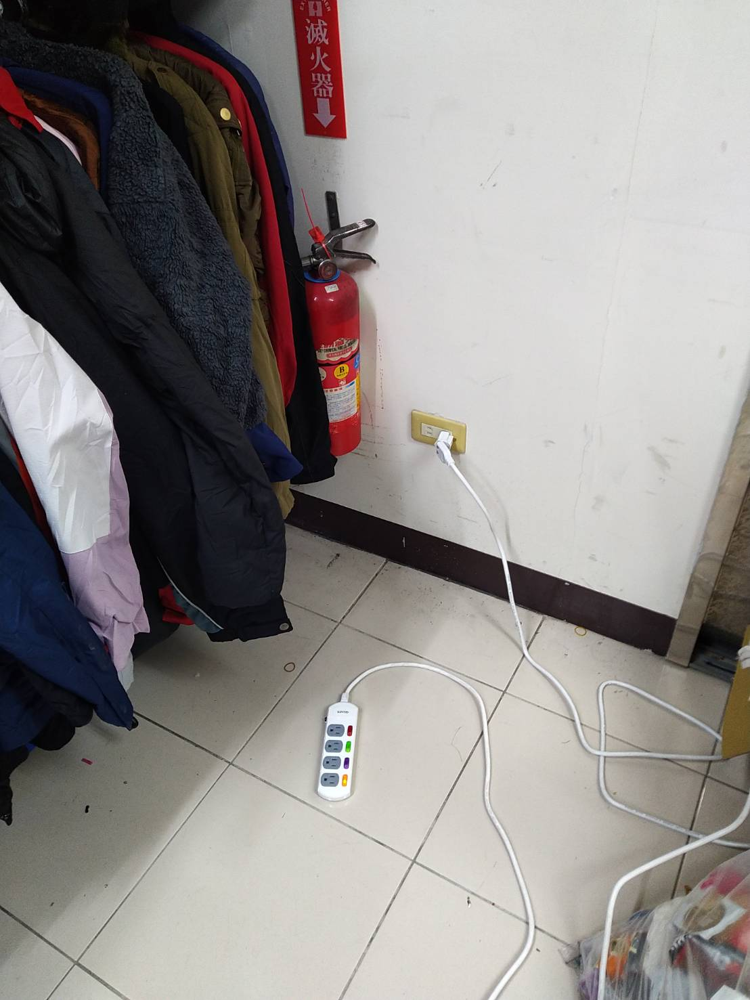
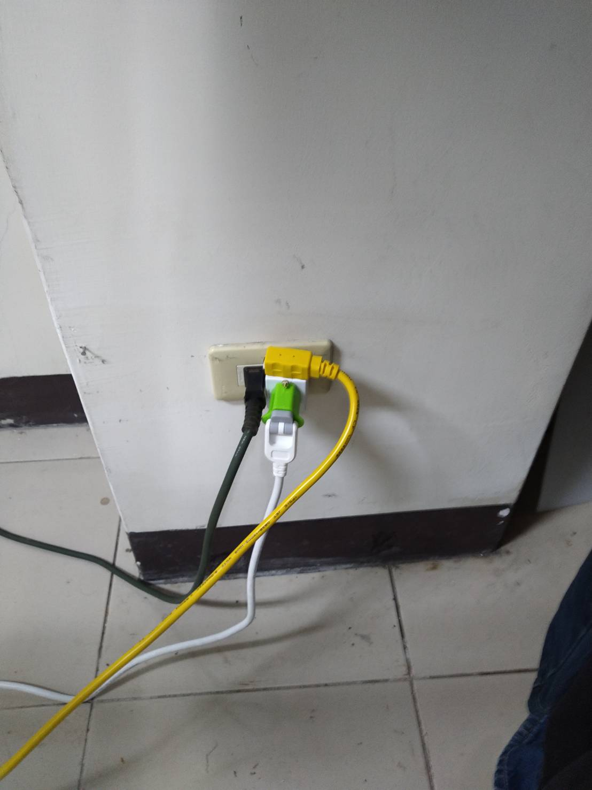
| 法規 / 標準 | 發現事項 | 處理狀態 |
|---|---|---|
| 消防法暨各類場所消防安全設備設置標準 | 地下室滅火器前方堆放舊衣物，阻礙取用（照片左）。 | 已完成：現勘當日告知後立即清空，滅火器前 0.5 m 淨空恢復 |
| 職業安全衛生設施規則 第 239-243 條（用電安全） | 白色延長線直插牆壁插座，未接受工業延長線保護機制管控（照片右）。 | 已完成：告知後確認調整，白線改接工業延長線 |
| 法規 / 標準 | 發現事項 | 處理狀態 |
|---|---|---|
| 職業安全衛生設施規則 第 239 條（電氣設備安全） | 單一插座同接三條線路（章魚腳），插座面板老化，有過載及短路引燃風險（照片右）。 | 待辦：電工評估插座面板更換，減少並聯線路；預計 Q3 前完成 |
| 職業安全衛生設施規則 第 21 條（通道整潔） | 多條電線橫跨地板通行區域，形成絆倒路徑；延長線排插直接置放地板（照片 左/右）。 | 待辦：線槽/線夾固定走線、排插架高；責任人及完成日期填入改善追蹤表 |
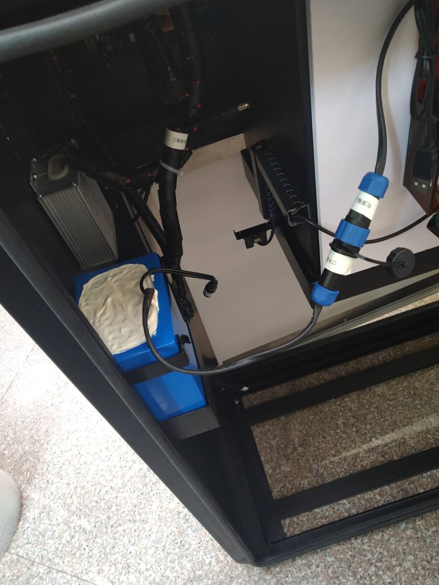
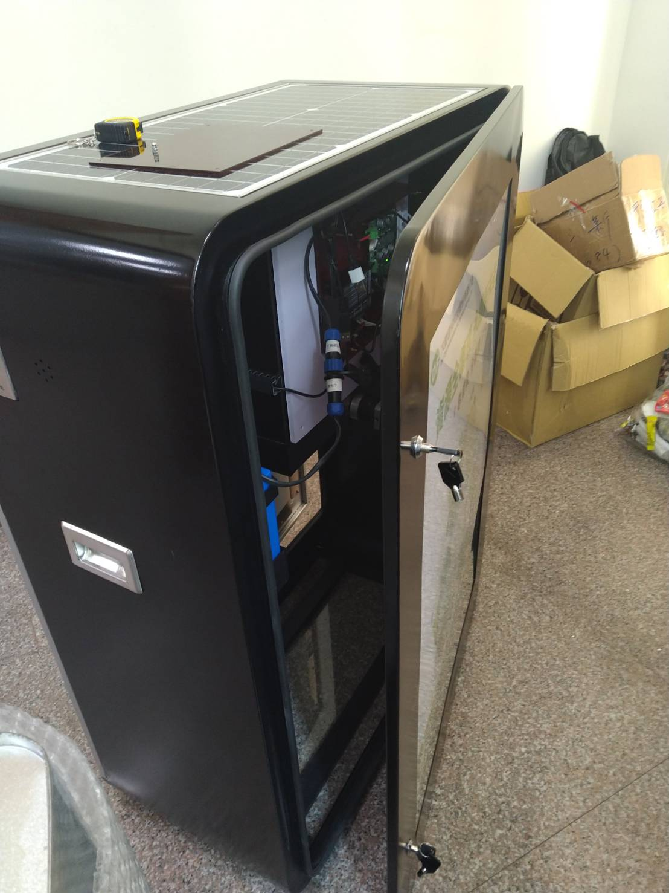
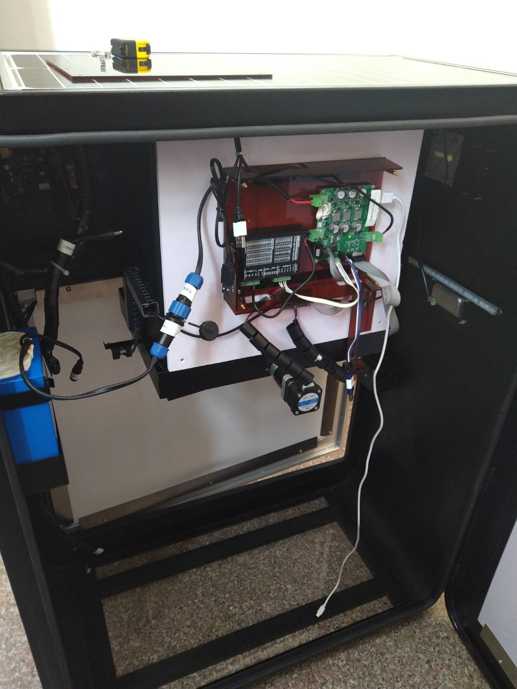
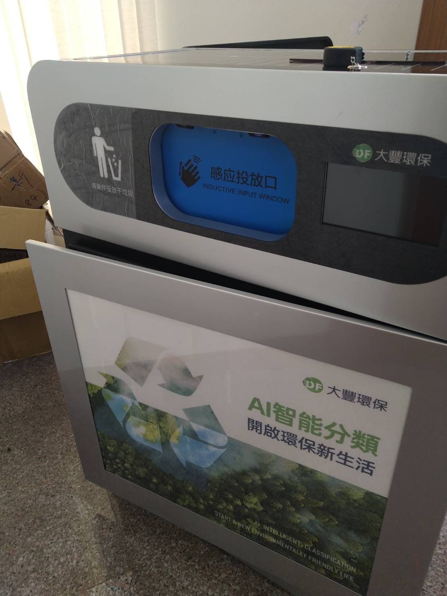
| # | 主要高風險項目 | 改善前風險 | 開放前控制措施 |
|---|---|---|---|
| 1 | 鋰電池、BMS、充電線路 | 9/高 | 電池固定於阻燃/金屬隔離艙，確認BMS、保險絲、過流/過溫保護，異常發熱或膨脹立即停用。 |
| 2 | 控制板、驅動器、端子與外露線束 | 9/高 | 加裝絕緣防護罩或封閉式電控箱，線束固定並防拉脫，維修前斷電驗電。 |
| 3 | 感應投放口與內部活動機構 | 6/中 | 投放口加防伸入、防夾感測或電流限制；卡料時禁止使用者伸手排除。 |
| 4 | 液體或濕垃圾滲入電控/電池區 | 9/高 | 垃圾區與電控/電池區實體隔離，導流防滴漏，張貼禁止投入液體及未倒空容器。 |
| 5 | 紙箱、工具、包材靠近設備 | 6/中 | 周邊1公尺保持整潔，工具零件不得置於設備上方，納入6S巡檢。 |
| 6 | 缺少SOP、警示與權責窗口 | 6/中 | 建立操作、清潔、維修、卡料排除、異常停機及火災通報SOP，完成教育後再開放使用。 |
- 電池固定、BMS、保險絲、過溫/過流保護確認完成。
- 電控板、端子、驅動器已加防護罩，非維修人員不可觸及。
- 設備接地、漏電斷路器及電源容量確認完成。
- 線束已固定，無破皮、鬆脫、跨越活動機構或通道。
- 投放口與門板防夾措施、警示標籤完成。
- 清潔、卡料排除、維修斷電SOP已建立並完成教育訓練。
- 周邊紙箱、工具、包材已移除，通道與散熱空間保持暢通。
- 適用滅火器材位置明確，人員知道冒煙/起火時停用、疏散、通報流程。
115年第二季（2026年4月至6月）期間，公司無職業災害、交通事故及上下班交通事故紀錄，本季職安管理績效良好。
| # | 指標名稱 | 指標內容 | 目標值 | Q2 實際值 | 達成狀態 |
|---|---|---|---|---|---|
| 1 | 管理系統文件 | 相關文件表單完成率 | 不定期 | 進行中 | 進行中 |
| 2 | 消防檢修申報 | 消防系統正常運作 | 1次／年 | 已完成（防火管理提報 5/20） | 已完成 |
| 3 | 管理方案達成率 | 達成數／目標件數 | 1次／年 | 進行中（Q2 共六項方案審議列管） | 進行中 |
| 4 | 內部稽核 | 改善件數／缺失件數 | 1次／年 | 明年Q1執行 | 待執行 |
| 5 | 作業環境監測 | 相關項目符合法規 | 2次／年 | 50%（1/2，已完成第一次） | 進行中 |
| 6 | 相關教育訓練 | 消防（上下半年）/ 在職訓 | 2次／年 | 50%（上半年兩廠完成） | 進行中 |
| 7 | 辦理在職員工健檢 | 符合資歷同仁進行健檢 | 1次／3年 | 今年無辦理 | 已完成 |
| 8 | 職護臨場服務 | 實際衛教次數／法定衛教次數 | 12次／年 | 進行中（5月：總部5/15、全興廠5/14；6月：總部6/23） | 進行中 |
本季無新增承攬業務安全衛生審議事項
如 Q3 涉及設備櫃安裝、電工改善或環境設備施工，建議納入承攬商危害告知與施工前安全確認。
感電電流對人體的危害程度（1mA–100mA）；下班前電源確認清單；延長線安全使用（禁止章魚腳、禁止串接）；潮濕環境用電禁忌；電氣異常（焦味、冒煙、跳脫）即停用通報。
久坐每45–60分鐘起立伸展；正確坐姿五要點（螢幕距離、椅背、膝蓋、手肘、頭部）；腕隧道症候群預防（手腕伸展三步驟）；螢幕視力20-20-20法則；搬運重物標準姿勢與法定重量限制。
整理（去除不必要）、整頓（定位定量）、清掃（清潔即點檢）、清潔（標準化）、素養（習慣遵守）、安全（融入日常）；每日離座清單（通道淨空、電線收納、插座關閉）。
熱痙攣、熱衰竭、熱中暑三類型辨識與緊急處置；高溫期間預防措施（補水頻率、衣著、避開正午）；熱中暑為緊急醫療，需立即送醫。
地震應變：趴下(DROP)→掩護(COVER)→穩住(HOLD ON)；逃生路線確認、集合點回報；有人昏倒處置四步驟（確認安全→呼叫→119→呼吸確認）；AED位置與基本操作。
六大侵害類型（身體攻擊、語言攻擊、精神霸凌、性騷擾、歧視、過度控管）；內部申訴管道（分機120）；霸凌 vs. 合理管理的判斷標準；保密承諾與禁止報復。
| 目標執行日期 | 行動事項 | 負責 / 追蹤 |
|---|---|---|
| 2026/Q3 | 安全設備櫃採購簽核與設備清單確認 | 安衛管理單位 |
| 2026/Q3 | 安全設備櫃到貨安裝、月檢表建置；地下室電線固定與排插架高第一輪改善 | 安衛管理單位 |
| 2026/Q3 | 會議室102自動分選垃圾桶電氣防護、防夾、標示、SOP與教育訓練改善後驗收 | 安衛管理單位 |
| 2026/Q3 | 年度健檢、地下室電氣危害複查、彰化全興廠噪音聽力保護計畫落實、擦手紙架導入追蹤 | 安衛管理單位 |
| 2026/11 | 下半年作業環境監測（台中總公司、彰化全興廠）— 依廠商預排時程執行 | 安衛管理單位 |